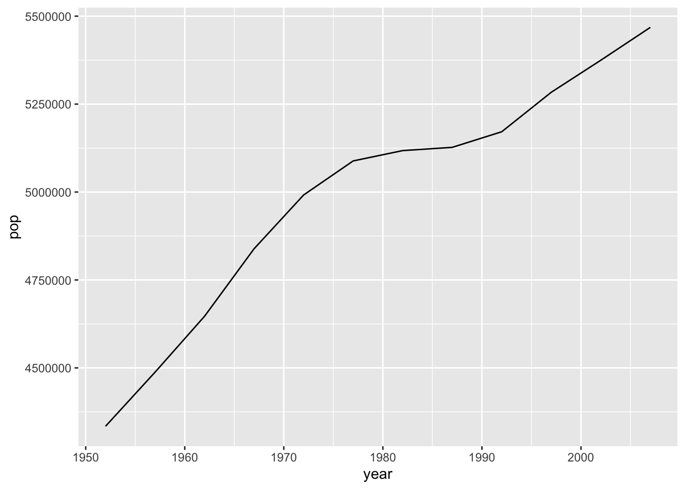
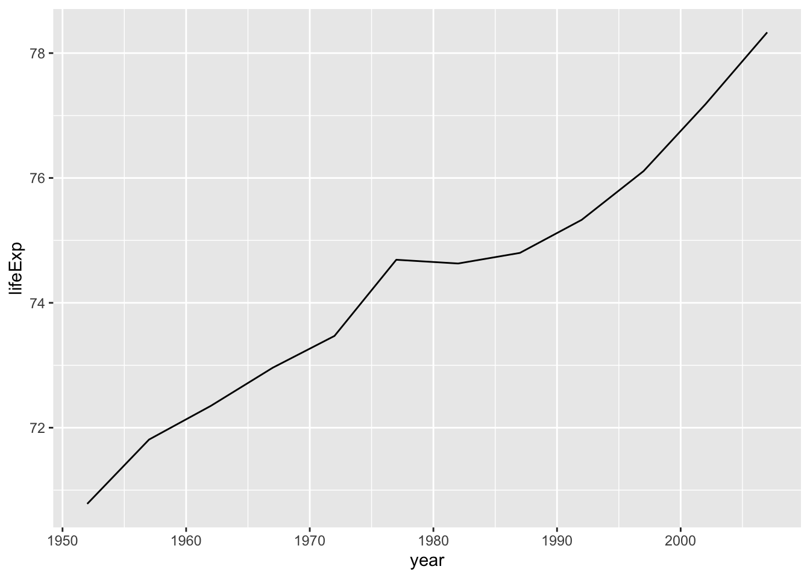
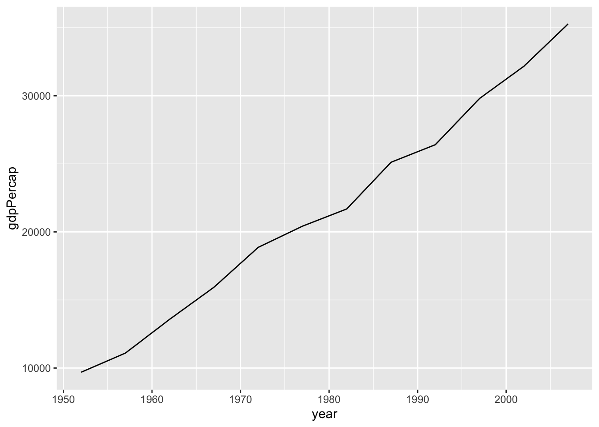

More about this website.
library("gapminder")
library(tidyverse)## ── Attaching packages ─────────────────────────────────────── tidyverse 1.3.1 ──## ✓ ggplot2 3.3.5 ✓ purrr 0.3.4
## ✓ tibble 3.1.4 ✓ dplyr 1.0.7
## ✓ tidyr 1.1.4 ✓ stringr 1.4.0
## ✓ readr 2.0.1 ✓ forcats 0.5.1## ── Conflicts ────────────────────────────────────────── tidyverse_conflicts() ──
## x dplyr::filter() masks stats::filter()
## x dplyr::lag() masks stats::lag()gapminder <- gapminderlibrary(dplyr)
set.seed(5098765)
randomcountry <- sample_n(gapminder, 1)
randomcountry## # A tibble: 1 × 6
## country continent year lifeExp pop gdpPercap
## <fct> <fct> <int> <dbl> <int> <dbl>
## 1 Denmark Europe 2002 77.2 5374693 32167.filter(year==2007)
Denmark <- gapminder %>%
filter(country == "Denmark")
Denmark %>% ggplot(aes(x = year, y = pop)) + geom_line()
Denmark %>% ggplot(aes(x=year, y=lifeExp)) + geom_line()
Denmark %>% ggplot(aes(x=year, y=gdpPercap)) + geom_line()
#Mean Europe 1952
gapminder %>%
filter(continent=="Europe", year == min(year)) %>%
summarise(avg_pop=mean(pop), avg_lifeExp=mean(lifeExp), avg_gdpPCap= mean(gdpPercap))## # A tibble: 1 × 3
## avg_pop avg_lifeExp avg_gdpPCap
## <dbl> <dbl> <dbl>
## 1 13937362. 64.4 5661.#Mean World 1952
gapminder %>%
filter(year == min(year)) %>%
summarise(avg_pop=mean(pop), avg_lifeExp=mean(lifeExp), avg_gdpPCap= mean(gdpPercap))## # A tibble: 1 × 3
## avg_pop avg_lifeExp avg_gdpPCap
## <dbl> <dbl> <dbl>
## 1 16950402. 49.1 3725.#Mean Europe 2007
gapminder %>%
filter(continent=="Europe", year == max(year)) %>%
summarise(avg_pop=mean(pop), avg_lifeExp=mean(lifeExp), avg_gdpPCap= mean(gdpPercap))## # A tibble: 1 × 3
## avg_pop avg_lifeExp avg_gdpPCap
## <dbl> <dbl> <dbl>
## 1 19536618. 77.6 25054.#Mean World 2007
gapminder %>%
filter(year == max(year)) %>%
summarise(avg_pop=mean(pop), avg_lifeExp=mean(lifeExp), avg_gdpPCap= mean(gdpPercap))## # A tibble: 1 × 3
## avg_pop avg_lifeExp avg_gdpPCap
## <dbl> <dbl> <dbl>
## 1 44021220. 67.0 11680.#For purposes of answering question 9:
#Mean Denmark 1952
gapminder %>%
filter(country=="Denmark", year == min(year)) %>%
summarise(avg_pop=mean(pop), avg_lifeExp=mean(lifeExp), avg_gdpPCap= mean(gdpPercap))## # A tibble: 1 × 3
## avg_pop avg_lifeExp avg_gdpPCap
## <dbl> <dbl> <dbl>
## 1 4334000 70.8 9692.#Mean Denmark 2007
gapminder %>%
filter(country=="Denmark", year == max(year)) %>%
summarise(avg_pop=mean(pop), avg_lifeExp=mean(lifeExp), avg_gdpPCap= mean(gdpPercap))## # A tibble: 1 × 3
## avg_pop avg_lifeExp avg_gdpPCap
## <dbl> <dbl> <dbl>
## 1 5468120 78.3 35278.#For Denmark (World) population
zscoreWorld<-gapminder%>%
group_by(year) %>%
mutate(avgpop=mean(pop), sdpop=sd(pop))%>%
filter (country == "Denmark") %>%
mutate(zscore=(pop-avgpop)/sdpop) %>%
filter(year==min(year))
zscoreWorld ## # A tibble: 12 × 9
## # Groups: year [12]
## country continent year lifeExp pop gdpPercap avgpop sdpop zscore
## <fct> <fct> <int> <dbl> <int> <dbl> <dbl> <dbl> <dbl>
## 1 Denmark Europe 1952 70.8 4334000 9692. 16950402. 58100863. -0.217
## 2 Denmark Europe 1957 71.8 4487831 11100. 18763413. 65504285. -0.218
## 3 Denmark Europe 1962 72.4 4646899 13583. 20421007. 69788650. -0.226
## 4 Denmark Europe 1967 73.0 4838800 15937. 22658298. 78375481. -0.227
## 5 Denmark Europe 1972 73.5 4991596 18866. 25189980. 88646817. -0.228
## 6 Denmark Europe 1977 74.7 5088419 20423. 27676379. 97481091. -0.232
## 7 Denmark Europe 1982 74.6 5117810 21688. 30207302. 105098650. -0.239
## 8 Denmark Europe 1987 74.8 5127024 25116. 33038573. 114756180. -0.243
## 9 Denmark Europe 1992 75.3 5171393 26407. 35990917. 124502589. -0.248
## 10 Denmark Europe 1997 76.1 5283663 29804. 38839468. 133417391. -0.252
## 11 Denmark Europe 2002 77.2 5374693 32167. 41457589. 140848283. -0.256
## 12 Denmark Europe 2007 78.3 5468120 35278. 44021220. 147621398. -0.261#For Denmark (Continent) population
zscoreContinent<-gapminder%>%
group_by(year) %>%
filter (continent == "Europe") %>%
mutate(avgpop=mean(pop),sdpop=sd(pop))%>%
filter (country == "Denmark") %>%
mutate(zscore=(pop-avgpop)/sdpop) %>%
filter(year==min(year))
zscoreContinent## # A tibble: 12 × 9
## # Groups: year [12]
## country continent year lifeExp pop gdpPercap avgpop sdpop zscore
## <fct> <fct> <int> <dbl> <int> <dbl> <dbl> <dbl> <dbl>
## 1 Denmark Europe 1952 70.8 4334000 9692. 13937362. 17247450. -0.557
## 2 Denmark Europe 1957 71.8 4487831 11100. 14596345. 17832354. -0.567
## 3 Denmark Europe 1962 72.4 4646899 13583. 15345172. 18656418. -0.573
## 4 Denmark Europe 1967 73.0 4838800 15937. 16039299. 19443589. -0.576
## 5 Denmark Europe 1972 73.5 4991596 18866. 16687835. 20180340. -0.580
## 6 Denmark Europe 1977 74.7 5088419 20423. 17238818. 20560544. -0.591
## 7 Denmark Europe 1982 74.6 5117810 21688. 17708897. 20971293. -0.600
## 8 Denmark Europe 1987 74.8 5127024 25116. 18103139. 21369711. -0.607
## 9 Denmark Europe 1992 75.3 5171393 26407. 18604760. 22126736. -0.607
## 10 Denmark Europe 1997 76.1 5283663 29804. 18964805. 22748145. -0.601
## 11 Denmark Europe 2002 77.2 5374693 32167. 19274129. 23223691. -0.599
## 12 Denmark Europe 2007 78.3 5468120 35278. 19536618. 23624744. -0.595#For Denmark (World) Life Expectancy (Is it correct, like the previous ones??)
zscoreWorldLifeExp<-gapminder%>%
group_by(year) %>%
mutate(avglifeExp=mean(lifeExp), sdlifeExp=sd(lifeExp))%>%
filter (country == "Denmark") %>%
mutate(zscore=(lifeExp-avglifeExp)/sdlifeExp) %>%
filter(year==min(year))
zscoreWorldLifeExp## # A tibble: 12 × 9
## # Groups: year [12]
## country continent year lifeExp pop gdpPercap avglifeExp sdlifeExp zscore
## <fct> <fct> <int> <dbl> <int> <dbl> <dbl> <dbl> <dbl>
## 1 Denmark Europe 1952 70.8 4334000 9692. 49.1 12.2 1.78
## 2 Denmark Europe 1957 71.8 4487831 11100. 51.5 12.2 1.66
## 3 Denmark Europe 1962 72.4 4646899 13583. 53.6 12.1 1.55
## 4 Denmark Europe 1967 73.0 4838800 15937. 55.7 11.7 1.47
## 5 Denmark Europe 1972 73.5 4991596 18866. 57.6 11.4 1.39
## 6 Denmark Europe 1977 74.7 5088419 20423. 59.6 11.2 1.35
## 7 Denmark Europe 1982 74.6 5117810 21688. 61.5 10.8 1.22
## 8 Denmark Europe 1987 74.8 5127024 25116. 63.2 10.6 1.10
## 9 Denmark Europe 1992 75.3 5171393 26407. 64.2 11.2 0.995
## 10 Denmark Europe 1997 76.1 5283663 29804. 65.0 11.6 0.960
## 11 Denmark Europe 2002 77.2 5374693 32167. 65.7 12.3 0.935
## 12 Denmark Europe 2007 78.3 5468120 35278. 67.0 12.1 0.938#For Denmark (Continent) Life Expectancy
zscoreContinentLifeExp<-gapminder%>%
group_by(year) %>%
filter (continent == "Europe") %>%
mutate(avglifeExp=mean(lifeExp),sdlifeExp=sd(lifeExp))%>%
filter (country == "Denmark") %>%
mutate(zscore=(lifeExp-avglifeExp)/sdlifeExp) %>%
filter(year==min(year))
zscoreContinentLifeExp## # A tibble: 12 × 9
## # Groups: year [12]
## country continent year lifeExp pop gdpPercap avglifeExp sdlifeExp zscore
## <fct> <fct> <int> <dbl> <int> <dbl> <dbl> <dbl> <dbl>
## 1 Denmark Europe 1952 70.8 4334000 9692. 64.4 6.36 1.00
## 2 Denmark Europe 1957 71.8 4487831 11100. 66.7 5.30 0.964
## 3 Denmark Europe 1962 72.4 4646899 13583. 68.5 4.30 0.886
## 4 Denmark Europe 1967 73.0 4838800 15937. 69.7 3.80 0.848
## 5 Denmark Europe 1972 73.5 4991596 18866. 70.8 3.24 0.832
## 6 Denmark Europe 1977 74.7 5088419 20423. 71.9 3.12 0.882
## 7 Denmark Europe 1982 74.6 5117810 21688. 72.8 3.22 0.567
## 8 Denmark Europe 1987 74.8 5127024 25116. 73.6 3.17 0.365
## 9 Denmark Europe 1992 75.3 5171393 26407. 74.4 3.21 0.277
## 10 Denmark Europe 1997 76.1 5283663 29804. 75.5 3.10 0.195
## 11 Denmark Europe 2002 77.2 5374693 32167. 76.7 2.92 0.164
## 12 Denmark Europe 2007 78.3 5468120 35278. 77.6 2.98 0.229#For Denmark (World) GDP per Capita
zscoreWorldAvGDPpCap<-gapminder%>%
group_by(year) %>%
mutate(avggdpPercap=mean(gdpPercap), sdgdpPercap=sd(gdpPercap))%>%
filter (country == "Denmark") %>%
mutate(zscore=(gdpPercap-avggdpPercap)/sdgdpPercap) %>%
filter(year==min(year))
zscoreWorldAvGDPpCap## # A tibble: 12 × 9
## # Groups: year [12]
## country continent year lifeExp pop gdpPercap avggdpPercap sdgdpPercap
## <fct> <fct> <int> <dbl> <int> <dbl> <dbl> <dbl>
## 1 Denmark Europe 1952 70.8 4334000 9692. 3725. 9321.
## 2 Denmark Europe 1957 71.8 4487831 11100. 4299. 9870.
## 3 Denmark Europe 1962 72.4 4646899 13583. 4726. 8667.
## 4 Denmark Europe 1967 73.0 4838800 15937. 5484. 8095.
## 5 Denmark Europe 1972 73.5 4991596 18866. 6770. 10614.
## 6 Denmark Europe 1977 74.7 5088419 20423. 7313. 8362.
## 7 Denmark Europe 1982 74.6 5117810 21688. 7519. 7734.
## 8 Denmark Europe 1987 74.8 5127024 25116. 7901. 8288.
## 9 Denmark Europe 1992 75.3 5171393 26407. 8159. 9032.
## 10 Denmark Europe 1997 76.1 5283663 29804. 9090. 10171.
## 11 Denmark Europe 2002 77.2 5374693 32167. 9918. 11154.
## 12 Denmark Europe 2007 78.3 5468120 35278. 11680. 12860.
## # … with 1 more variable: zscore <dbl>#For Denmark (Continent) GDP per Capita
zscoreContinentAvGDPpCap<-gapminder%>%
group_by(year) %>%
filter (continent == "Europe") %>%
mutate(avggdpPercap=mean(gdpPercap),sdgdpPercap=sd(gdpPercap))%>%
filter (country == "Denmark") %>%
mutate(zscore=(gdpPercap-avggdpPercap)/sdgdpPercap) %>%
filter(year==min(year))
zscoreContinentAvGDPpCap## # A tibble: 12 × 9
## # Groups: year [12]
## country continent year lifeExp pop gdpPercap avggdpPercap sdgdpPercap
## <fct> <fct> <int> <dbl> <int> <dbl> <dbl> <dbl>
## 1 Denmark Europe 1952 70.8 4334000 9692. 5661. 3114.
## 2 Denmark Europe 1957 71.8 4487831 11100. 6963. 3678.
## 3 Denmark Europe 1962 72.4 4646899 13583. 8365. 4199.
## 4 Denmark Europe 1967 73.0 4838800 15937. 10144. 4725.
## 5 Denmark Europe 1972 73.5 4991596 18866. 12480. 5510.
## 6 Denmark Europe 1977 74.7 5088419 20423. 14284. 5874.
## 7 Denmark Europe 1982 74.6 5117810 21688. 15618. 6453.
## 8 Denmark Europe 1987 74.8 5127024 25116. 17214. 7483.
## 9 Denmark Europe 1992 75.3 5171393 26407. 17062. 9110.
## 10 Denmark Europe 1997 76.1 5283663 29804. 19077. 10065.
## 11 Denmark Europe 2002 77.2 5374693 32167. 21712. 11197.
## 12 Denmark Europe 2007 78.3 5468120 35278. 25054. 11800.
## # … with 1 more variable: zscore <dbl>